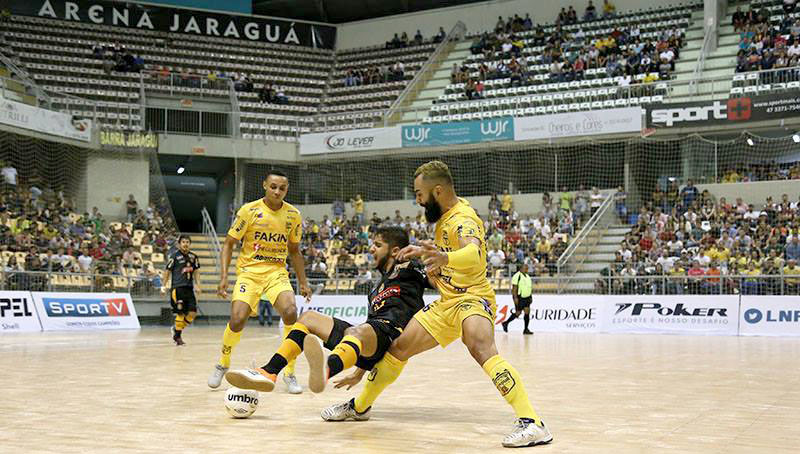
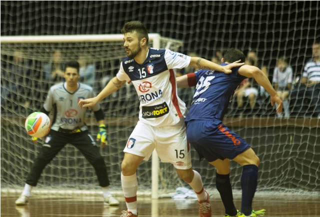
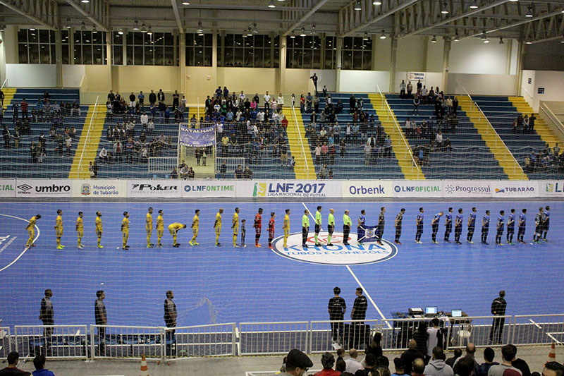

Saiu a primeira vitória do Jaraguá Futsal na Liga Nacional 2017. E ela veio repleta de muita emoção. Na noite desta quinta-feira (4), o aurinegro saiu na frente do placar e viu o Sorocaba virar o marcador ainda no primeiro tempo. Mas com uma grande atuação na etapa final e empurrado pela torcida na Arena, o time jaraguaense se impôs sobre o rival e saiu de quadra com uma vitória pelo placar de 5 a 4, em duelo válido pela quarta rodada da primeira fase.
Com o resultado, o Jaraguá pulou para o nono lugar da tabela de classificação, com os mesmos quatro pontos de Marreco, Carlos Barbosa, Copagril e do próprio Sorocaba. “Foi uma boa atuação. Viemos de uma derrota na Liga muito frustrante contra o Joaçaba e nos cobramos muito. Sabíamos que ia ser um jogo muito difícil contra o Sorocaba, mas conseguimos estes três pontos que eram muito importantes para nós”, disse William, eleito o jogador destaque do jogo. “Precisávamos dessa vitória e o Jaraguá tem sua casa como grande força, com a torcida para dar um combustível a mais. Então é uma vitória para dar ainda mais confiança para um grupo que é muito bom. Jaraguá sempre entra para brigar por título e não será diferente. Sabemos que a caminhada é muito longa e difícil, mas com humildade e sabendo das nossas limitações vamos criar dificuldades aos adversários na competição”, destacou o ala Oitomeia.
O primeiro tempo começou muito estudado, com as equipes se respeitando e arriscando pouco no setor de ataque. Mas empurrado pela torcida que compareceu em bom número na Arena, o Jaraguá conseguiu abrir o placar na primeira oportunidade clara criada. Aos 3 minutos, em rápido contra-ataque, Yuri recebeu passe, avançou pela direita e tocou na saída de Tiago. Seguro na defesa, o time da casa mandava no jogo, sem dar brechas ao time paulista e criando boas chances para ampliar.
Porém, na primeira jogada bem trabalhada, os visitantes chegaram ao empate, aos 10. Após boa troca de passes, Arthur deixou Leandro Lino sozinho no segundo pau, que só completou para as redes. O gol animou os sorocabanos, que menos de um minuto depois, viraram o marcador com Pixote, que aproveitou rebote em chute de Bruno e só empurrou para o gol. Faltando 30 segundos, o Jaraguá conseguiu o empate, com Daniel que tocou para o gol vazio, após também pegar rebote em chutes de Oitomeia e William, que Tiago apareceu para salvar. Mas 15 segundos depois, em desatenção da defesa do aurinegro, Rocha apareceu livre na área e fez o terceiro.
Já no segundo tempo, o Jaraguá voltou melhor e com uma marcação alta passou a pressionar o Sorocaba na quadra defensiva. Após criar duas boas oportunidades, o empate veio aos 4 minutos. William cortou a marcação e rolou para Marcio, que voltando de lesão, fez o dele na partida. Superior ao adversário, o time jaraguaense conseguiu a segunda virada do clássico, aos 7. Em cobrança de escanteio, Renatinho tocou para William, que driblou Rocha e acertou uma bomba de fora da área sem chances para Tiago.
Aos 9, foi a vez de Daniel deixar o segundo dele. Em clássica jogada de pivô, o camisa 5 girou sobre Rodrigo e chutou no ângulo direito de Tiago para fazer o quinto. A partir daí, a equipe paulista teve o domínio da posse de bola, mas firme na defesa, o time da casa se segurou bem e contou com boas defesas de Tatá. Restando apenas um segundo, o aurinegro cometeu a sexta falta coletiva. Hulk e Tatá defenderem as duas primeiras cobranças, mas o árbitro mandou voltar alegando que ambos se adiantaram. Na terceira, Rodrigo descontou, mas nada que evitasse a vitória do Jaraguá: 5 a 4.
Antes mesmo de estrear oficialmente na temporada, no confronto desta quinta-feira (6) contra o Tubarão pelo Estadual, a diretoria do Jaraguá Futsal realizou algumas mudanças no elenco. Na tarde de ontem, quatro atletas foram dispensados do clube e outros dois tiveram suas contratações anunciadas, passando a integrar o grupo que tem o Catarinense e a Liga Nacional como grandes objetivos no ano.
Os dois novos reforços são o ala/fixo Daniel e o fixo Schneider. Aos 23 anos, Daniel Mendonça da Rosa teve toda sua formação no próprio aurinegro, deixando a equipe em 2013 para jogar no Joinville. Após duas temporadas no tricolor, ele acertou com o Sorocaba, onde foi campeão mundial no ano passado. No início deste ano, o jogador se transferiu para o Flores da Cunha, mas acabou rescindindo contrato depois do time gaúcho anunciar sua saída da Liga. “Estou muito feliz em poder voltar ao Jaraguá. Posso dizer realmente que estou em casa por ter minha família e muitos amigos por aqui. Foi o lugar que eu mais me senti bem para jogar e espero ajudar o clube neste retorno, com muita disposição e vontade”, disse.
Já Maiko Roberto Schneider tomou o mesmo caminho e foi contratado após deixar o Flores da Cunha. Revelado pelo Joinville, o atleta de 24 anos ainda atuou pelo Umuarama (PR), entre 2014 e 2016. “Estou muito feliz e motivado pela oportunidade de jogar em um dos principais times do país. Tenho a esperança de fazer um ótimo ano junto com o clube, chegar em todas finais possíveis, e trazer títulos, porque o futsal de Jaraguá vive de títulos”, destacou.
Sem entrar em muitos detalhes, a diretoria também informou que os fixos Gustavo Henrique e Magui, além dos alas Jezin e Gustavo Barros foram dispensados por não se adequarem ao estilo de jogo da equipe. Os quatro jogadores foram contratados no início de janeiro e vinham treinando normalmente com o elenco durante a pré-temporada. Com as saídas e chegadas, o elenco do Jaraguá passa a ser composto por 16 atletas.
O Jaraguá Futsal conquistou sua primeira vitória, fora de casa, na Liga Nacional. Na noite desta sexta-feira (16), em duelo de catarinenses contra o Tubarão, o aurinegro sofreu um gol logo nos primeiros segundos de jogo, mas teve forças para reagir e conseguiu a virada no segundo tempo, saindo de quadra com o triunfo pelo placar de 2 a 1, no Ginásio Estener Soratto.
Aos dezesseis segundos da etapa inicial, Charuto abriu o placar para os donos da casa, com um chute de fora da área. Mas um minuto depois, em jogada ensaiada de escanteio, o time jaraguaense chegou ao empate com Daniel, que segue como artilheiro da equipe na competição, agora com cinco gols marcados. Aos 8, o ala William que voltava de lesão depois de ficar afastado por três semanas, acabou sendo expulso por uma cotovelada em Ariel. Porém, o Jaraguá segurou o ímpeto do adversário e não sofreu gol mesmo com um jogador a menos. Já no segundo tempo, Marcio virou o marcador aos 10 minutos, e deu a importante vitória ao aurinegro para a sequência da Liga.
Aos dezesseis segundos da etapa inicial, Charuto abriu o placar para os donos da casa, com um chute de fora da área. Mas um minuto depois, em jogada ensaiada de escanteio, o time jaraguaense chegou ao empate com Daniel, que segue como artilheiro da equipe na competição, agora com cinco gols marcados. Aos 8, o ala William que voltava de lesão depois de ficar afastado por três semanas, acabou sendo expulso por uma cotovelada em Ariel. Porém, o Jaraguá segurou o ímpeto do adversário e não sofreu gol mesmo com um jogador a menos. Já no segundo tempo, Marcio virou o marcador aos 10 minutos, e deu a importante vitória ao aurinegro para a sequência da Liga.
“Pelo alto nível do jogo só podemos comemorar a vitória e principalmente pela circunstância que foi o jogo, sofrendo gol no início e tendo atleta expulso. Isso nos fortaleceu e todos tiveram sua parcela de contribuição para a vitória”, disse o técnico Fio. “Vitória muito importante para a sequência da competição e para brigarmos na parte de cima da tabela com os primeiros colocados. A nossa equipe se portou muito bem e soube resistir a pressão do adversário, que precisava muito da vitória, pois estava a três pontos de nós”, destacou o pivô Daniel.
Com o resultado, o Jaraguá subiu quatro posições na tabela de classificação. Agora com onze pontos somados em sete partidas, a equipe foi do 11º ao 7º lugar, ficando apenas quatro pontos atrás dos líderes Joaçaba e Corinthians. Na próxima rodada, os comandados de Fio voltam a reencontrar seu torcedor. Na sexta-feira, dia 23 de junho, o time recebe o Guarapuava, às 20h15, na Arena.
